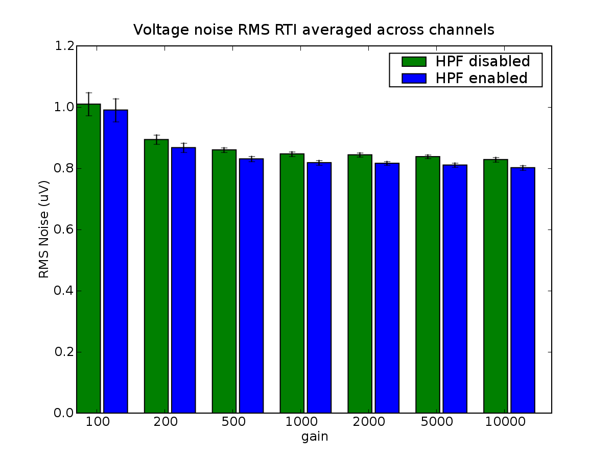
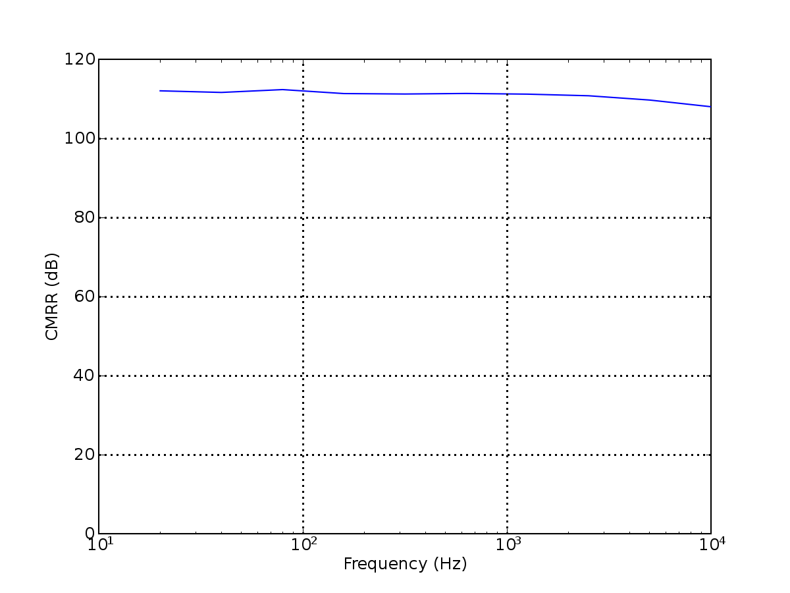
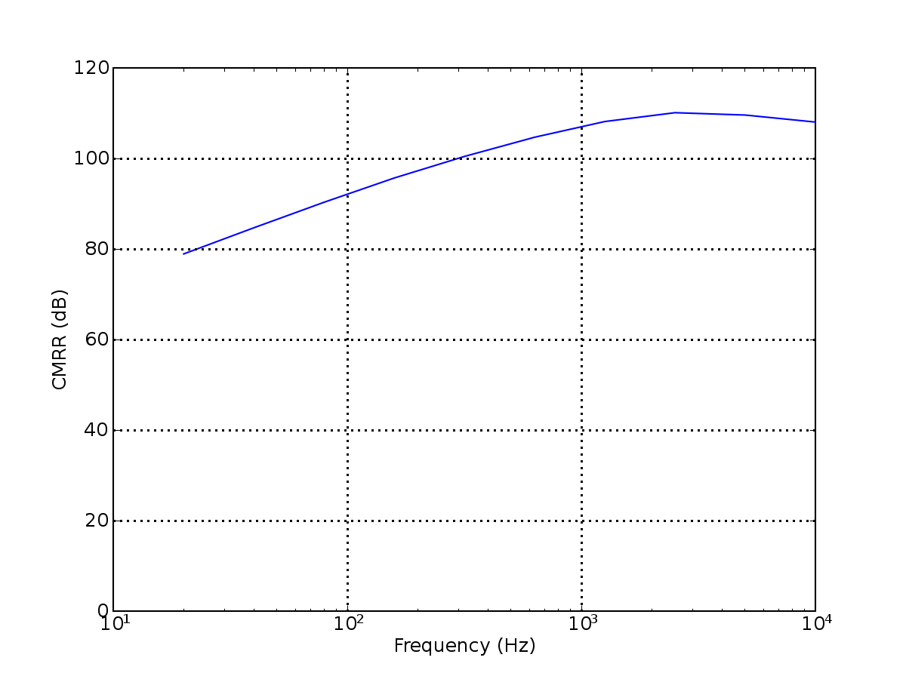

Another day, another series of tests. Unfortunately, the acqboard
prototype we received from eTech-WEB had numerous shorts in it,
including an impossible-to-fix one that appeared to be under the PGA
between channel B2 and B1. I have removed those channels for the time
being.
The visible shorts on the ADC are above.
The current state of our benchmarking code really leaves something to
be desired, and should undergo a comprehensive clean-up at some point
in the near future. In particular, I'm unclear on how exactly I run
THD+N tests, noise tests, linearity tests, etc. and produce my expected
plots.
Ultimately, the problem is that the code that you want to run when
debugging is different from the code that you want to run when running
large-scale performance tests. The situation is similar with the
graphical output.
We generate the following data with Experiments2.py, and then use
thdnMeasure.py to plot:
Which is associated with the non-svn'd file 20060514.all.h5.
21 May 2006
Now we will attempt to verify performance across each of the acqboards.
To do this I have written a simple "channel check" benchmark which
tries to do a single full-scale THD+N measurement for all channels /
gains / filter settings.
22 May 2006
6 of the acquisition boards appear to just work, but the seventh has
some sort of ADC-related problem that has proven difficult to diagnose.
26 May 2006
We have 13 working acquisition boards assembled by eTech-WEB, and
another 3 that need some sort of love.
1 June 2006
Board performance measurement for docs...
3 June 2006
Print-able noise benchmarks:

Noise plot generated from no-svn/200606030-board.05.noise.h5 by
averaging the RMS noise across all channels, per gain.
Of course, now I'm worrying our CMR might be total crap...
CMR Measurements:


CMRR of board with AC-coupling
hardware removed
CMRR of board as-shipping, with
input AC-coupling HPF
As you can see from above, the addition of the 10uf/100k AC-coupling
stage in front of the in-amps has significantly degraded our
common-mode rejection, due to impedance mismatch between the filter
elements. At high frequencies, this is less of a problem, and it still
looks like we get ~90 dB CMR at 60 Hz, but it would be nice if we
didn't have to take this hit.
Ultimately, the ramifications will depend on the measured CMR of the
neuralynx amps, as a guide to how much CMR we "really need". Potential
solutions would be:
remove input AC-coupling, and perform the same thing at the preamp
remove input AC-coupling, change in-amp gain to 10x, and reduce
the ADC range by a factor of 10
Both of these can be done with our current hardware configuration.
Again, the above graphs can be found under
no-svn/20060603-board.05.cmmr.h5